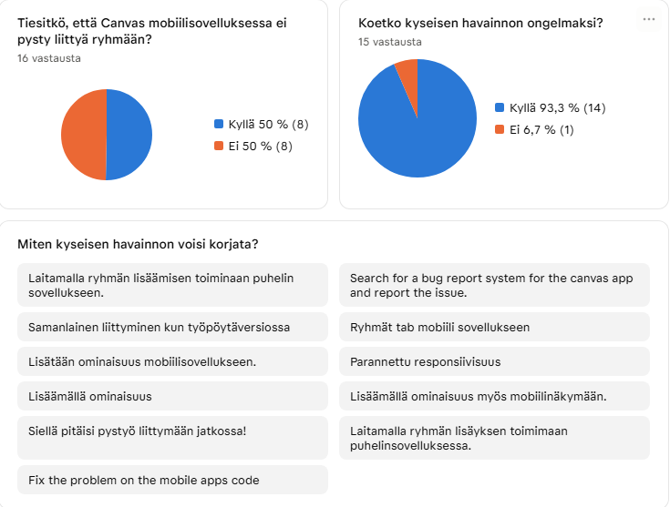

We are improving the Canvas mobile app by designing a dedicated Group section, which is currently missing compared to the desktop version. Our goal is to make course groups easily accessible on mobile so students can quickly find teammates, collaborate on group assignments, and stay synced without having to switch to a PC.
In the Canvas PC app, the UI is pre-structured and straightforward: navigating to People reveals two tabs (Everyone and Groups), making assigned groups immediately discoverable and easy to use. In contrast, Discord relies on user-driven, organic grouping, users have to manually add friends, coordinate, and create a server or group DM via invites rather than browsing a central directory tab.
This comparison shows that the Canvas mobile app doesn't need a complex invite system like Discord because course groups are already well structured; instead, it simply needs feature parity with Canvas PC. Adding a dedicated Groups tab / category inside the mobile People menu will give students immediate, low-friction access to their teams on the go.
Laurea Students because then they have other option to join group than just laptop/computer.
We are Laurea Students who use Canvas Mobile app. We have also interviewed other Laurea Students.

Based on the interviews filled with Google Forms, major students in Laurea wants a new feature to be added for easier user usability.